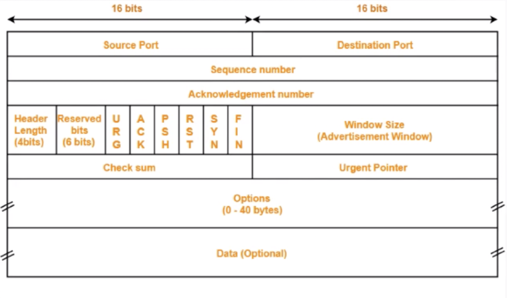

网络流控是为了在上下游速度不匹配的情况下，如何防止下游出现过载的手段
网络流控有静态限速和动态反压两种手段
Flink 1.5以前是基于TCP流控+bounded buffer来实现反压
Flink 1.5之后实现了自己托管的credit-based流控机制，在应用层模拟TCP流控的机制
本文将对以上几点逐一介绍，并介绍几种常见的反压问题的处理方式。
网络流控的概念与背景
为什么需要网络流控

5s后，将面临以下两种情况之一：
- bounded receive buffer： consumer丢弃新到达的数据。
- unbounded receive buffer：buffer持续扩张，耗尽consumer的内存。
静态限速

静态限流有两种限制：
- 通常无法预估consumer端能承受的最大速率。
- consumer承受能力通常会动态波动。
guava包中基于令牌桶实现的静态限速
动态反馈/自动反压

动态反馈氛围两种，广义上的反压机制都涵盖：
- 负反馈：接收速率小于发送速率时发生。
- 正反馈：接收速率大于发送速率时发生。
Storm反压

- 每个bolt中都有检测 backpressure 的线程，此线程检测到 bolt 中的阻塞队列有严重的阻塞情况。
- 将反压信息 feedback 写入 zookeeper。
- zookeeper 被 spout 监听，监听到阻塞 feedback，就会停止发送。
Spark Streaming反压

从中间的 buffer 或者每个处理节点中实时收集一些动态指标，将速度控制的情况返回到接收端，将接收端的速度也降下来。
Flink网络传输的数据流向
为什么Flink（before V1.5）里没有类似的feedback机制？
因为TCP天然具备feedback流控机制，Flink基于它实现反压。
每个 operator 经过自己的Network stack，底层使用Netty通信：
TCP流控机制
TCP Packet

TCP流控：滑动窗口
- 定义生产者速度为 3packets/s，消费者速度为 1packet/s。 发送窗口初始大小为3，接收窗口初始大小为5。

- 生产者端向消费者端发送数据<1,2,3>。

- 用户态消费者消费了数据<1>，消费者端的滑动窗口向前滑动 1 格。并向生产者端发送ACK = 4，以及自己的窗口内的剩余缓冲区大小 3。发送窗口向前滑动 3 格。

- 生产者端向消费者端发送数据<4,5,6>。

- 用户态消费者消费了数据<2>，消费者端的滑动窗口向前滑动 1 格。并向生产者端发送ACK = 7，以及自己的窗口内的剩余缓冲区大小 1。发送窗口向前滑动 1 格。发送端此时已被节流，速度降为 1packet/s。

- 生产者端向消费者端发送数据<7>。

- 用户态消费者此时停止消费，向生产者端发送ACK = 8，以及自己的窗口内的剩余缓冲区大小 0。发送端速度降为 0packet/s。

- 生产者端向消费者端发送轮询探针，如果消费者端缓冲区有空间，将会应答window大小。

- 用户态消费者恢复消费，消费了数据<3>，消费者端的滑动窗口向前滑动 1 格。接收到了生产者端的probe。

- 向生产者端发送ACK = 8，以及自己的窗口内的剩余缓冲区大小 1。生产者端的生产速度恢复为 1packet/s。

Flink TCP-based反压机制（before V1.5）
Flink代码中的网络模块抽象
示例：WindowWordCount
1 | public static void main(String[] args) throws Exception { |
编译阶段：生成JobGraph
Client端通过 StreamGraph 生成 JobGraph：
JobGraph 是向集群提交的最基本单元，对任务做了部分优化，合并了相应节点，因为这些节点之间没有任何的shuffle。
调度阶段：调度ExecutionGraph
在 JobManager 中创建 ExecutionGraph：
已经具备了执行的雏形，每个任务都拆解出了subtask。Execution Edge 之前会有一个发送数据的模块，Intermediate Result Partition。
将 ExecutionGraph 交给 JobManager 的调度器，调度器负责把整个 ExecutionGraph 给调度起来，形成虚拟的物理执行图。
每个 subtask 之前都有统一接收数据的 InputGate ，ResultPartition 可以认为是发送数据，二者是对应的关系。ResultPartition 内部又会做分区，因为输出结果可能会shuffle给下游的多个task。
反压传播两个阶段

- 跨TaskManager：反压如何从 InputChannel 传播到 ResultSubpartition。
- TaskManager：反压如何从 ResultSubpartition 传播到 InputChannel。
跨TaskManager数据传输

LBP：Task 线程启动时，会向 NetworkEnvironment 注册，NetworkEnvironment 会为 Task 的 IG 和 RS 分别创建一个 LocalBufferPool 并设置可申请的 MemorySegment 数量。给每一个 task 创建一个 Local Buffer Pool。
NBP：TM在启动时，会先初始化 NetworkEnvironment 对象，TM种所有与网络相关的东西都由该类来管理（如Netty连接），其中就包括 NetworkBufferPool 。NetworkEnvironment 和 NetworkBufferPool 是Task间共享的，每个TM只会实例化一个 ，初始化时从 Off-heap Memory中申请，不依赖于JVM。
Off-heap Memory：
ResultSubPartition 的 buffer 拷贝至 Netty 的 buffer，Netty 的用户态 buffer 拷贝至 Socket 的内核态 buffer。
跨TaskManager反压过程
假设生产速度为2，消费速度为1，模拟速度上下游不匹配的情况。数据一直在发送。
- 运行一段时间之后，InputChannel 的 buffer 已满，向 LBP 申请新的 buffer，被申请过的 buffer 标识为 ‘Used’。

- 又运行一段时间之后，LBP 已满，只能向 NBP 申请新的 buffer，每个 LBP 都有最大可用 buffer。

- 又运行一段时间之后，NBP 已满 或者 LBP 达到了使用份额，Netty 还是一直想把数据写到 InputChannel 中，此时就会在 Socket 层 disable Netty 的 autoRead，
Netty 不再从 Socket 中读取消息，只能在 Socket 自己的 buffer 中一直做缓存。

- 又运行一段时间之后，Socket receive buffer 很快就会满，就会把 window = 0 的消息反馈给发送端。

- 又运行一段时间之后，发送端接收到 window = 0，停止发送。Socket send buffer 也很快就会被写满。Netty 也写不进去到 Socket 了，也会停止写。

- 又运行一段时间之后，Netty 的 buffer 是无界的，通过 HW 控制是否可写入 Netty 的 buffer，ResultSubpartition 每次写之前会检查 channel.isWritable() ，避免 Netty 的 buffer 无限增长。

- 又运行一段时间之后，ResultSubpartition 的 buffer 会不断累积，然后会向 LBP 申请内存.

- 又运行一段时间之后，LBP 已满，向 NBP 申请内存。

- 又运行一段时间之后，NBP 也满，申请不到内存时 Record Writer 就会 block 住，申请不到 buffer 时就会有一个 wait 操作。

TaskManager内反压过程
- 假定 TaskA 的 ResultPartition 已经由于下游消费过慢出现反压，已经写阻塞了。将写的阻塞传播给读，输入和输出是在同一个线程里的，线程已经被写 block 住了，当然也没办法消费数据了。
InputGate 也会被 block 住。

- 紧接着会打满各层的 buffer ，并向上游的 TaskManger 推进反压情况。


Flink Credit-based反压机制（since v1.5）
TCP-based反压的弊端

- 由于多路复用Socket，单个Task导致的反压，会阻断整个TM-TM的Socket，连checkpoint barrier也无法发出，导致 checkpoint 延时增大。
- 反压传播路径太长，导致生效延迟比较大。
Credit-based反压
在Flink层面实现类似 TCP 流控的 feedback 机制，credit 可类比为 TCP window。
不会要占满 Socket 的 buffer 才出现反压，在ResultSubpartition 和 InputGate 就可以直接产生反压。

- ResultSubpartition 向 InputGate 发送数据时，会打上 backlog size ，代表 ResultSubpartition 端积压了多少数据。
- InputGate 就根据 backlog size 去估算内存情况，返回credit给发送端。
- ResultSubpartition 接收到 credit 之后才会真正发送数据。
Credit-based反压过程
仍然假设生产速度为2，消费速度为1，模拟速度上下游不匹配的情况。


反压问题排查
定位到反压节点后，分析造成原因的办法和我们分析一个普通程序的性能瓶颈的办法是十分类似的，可能还要更简单一点，因为我们要观察的主要是 Task Thread。
在实践中，很多情况下的反压是由于数据倾斜造成的，这点我们可以通过 Web UI 各个 SubTask 的 Records Sent 和 Record Received 来确认，另外 Checkpoint detail 里不同 SubTask 的 State size 也是一个分析数据倾斜的有用指标。
此外，最常见的问题可能是用户代码的执行效率问题（频繁被阻塞或者性能问题）。最有用的办法就是对 TaskManager 进行 CPU profile，从中我们可以分析到 Task Thread 是否跑满一个 CPU 核：如果是的话要分析 CPU 主要花费在哪些函数里面，比如我们生产环境中就偶尔遇到卡在 Regex 的用户函数（ReDoS）；如果不是的话要看 Task Thread 阻塞在哪里，可能是用户函数本身有些同步的调用，可能是 checkpoint 或者 GC 等系统活动导致的暂时系统暂停。
当然，性能分析的结果也可能是正常的，只是作业申请的资源不足而导致了反压，这就通常要求拓展并行度。值得一提的，在未来的版本 Flink 将会直接在 WebUI 提供 JVM 的 CPU 火焰图[5]，这将大大简化性能瓶颈的分析。
另外 TaskManager 的内存以及 GC 问题也可能会导致反压，包括 TaskManager JVM 各区内存不合理导致的频繁 Full GC 甚至失联。推荐可以通过给 TaskManager 启用 G1 垃圾回收器来优化 GC，并加上 -XX:+PrintGCDetails 来打印 GC 日志的方式来观察 GC 的问题。
反压监控
在storm中，只要监控队列满了，就可以记录下拓扑进入反压了。但是Flink的反压过于天然，无法简单的通过监控队列来监控反压状态。如果一个Task因为反压而降速了，那么它会卡在向 LocalBufferPool 申请内存块上。此时该 Task 的 stack trace 如下：
1 | java.lang.Object.wait(Native Method) |
Flink 就是通过不断采样每个 Task 的 stack trace 来实现反压监控的。JM 会通过 Akka 给每个 TM 发送 TriggerStackTraceSample 消息。
业务代码优化
left join 可能会产生大量的 null 数据，导致网络流量剧增，最终导致反压、checkpoint超时等问题。此时可以考虑优化代码，减少 left join、增大operator并发度、拆解任务等。
网络调参
// 待补充
反压不触发时的静态限速
有了动态反压，静态限速是不是完全没有作用了？

Storage 到 Sink 之间的反压是整个反压的源头，但是不一定被触发，取决于 Storage 的内部实现，如Kafka内部有quato限流机制。
但是不是所有的Storage都有这个能力，如 ES ，可能在 ES 端已经出现了大量的 timeout ，也不会向上游反压，此时就需要在 Source 端做静态限流。
Flink 1.8 的 kafka source 支持限流，setRate 设置 consumer 每秒钟不能消费超过多少的数据。